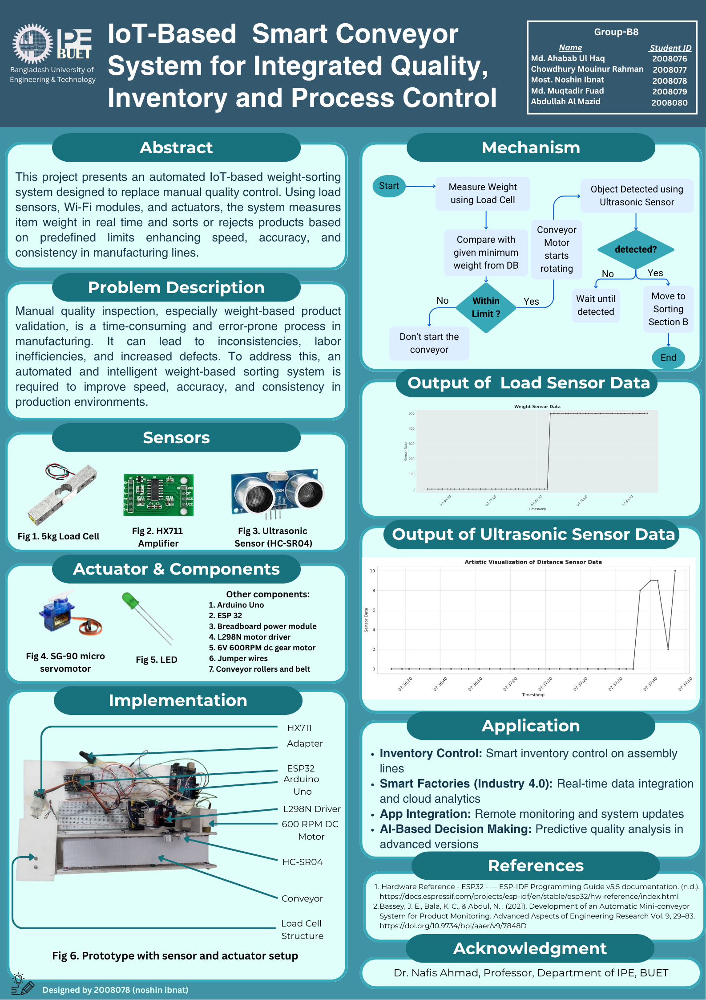
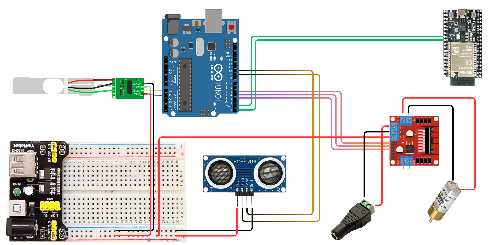

Manual quality inspection, especially weight-based product validation, is a time-consuming and error-prone process in manufacturing. It leads to inconsistencies, labor inefficiencies, and increased defects. An automated and intelligent weight-based sorting system is required to improve speed, accuracy, and consistency in production environments.
| Device / Component | Quantity | Task / Function |
|---|---|---|
| 5kg Load Cell | 1 | Measures the weight of each item on the conveyor |
| HX711 Amplifier | 1 | Amplifies load cell signal and provides digital output |
| Ultrasonic Sensor (HC-SR04) | 1 | Detects object presence for conveyor/process control |
| SG-90 Micro Servo Motor | 1 | Used for sorting/rejecting items based on weight |
| LED | 1 | Status indication (process or error feedback) |
| Arduino Uno | 1 | Main microcontroller (processes all sensor data) |
| ESP32 | 1 | Wi-Fi communication; sends data to cloud/server |
| Breadboard Power Module | 1 | Provides power supply to the circuit/components |
| L298N Motor Driver | 1 | Controls the DC gear motor for conveyor movement |
| 6V 600RPM DC Gear Motor | 1 | Drives the conveyor belt |
| Conveyor Rollers & Belt | 1 set | Physical platform for item transportation |
| Jumper Wires | Multiple | Electrical connections between components |


#include
#define DOUT A1 // HX711 data pin
#define CLK A0 // HX711 clock pin
HX711 scale;
#define trigPin 9
#define echoPin 10
#define motorIN1 3
#define motorIN2 4
#define motorEN 5
#define ledPin 6
float weightThreshold = 100.0; // Start motor if weight > 10 grams
int objectCount = 0;
void setup() {
Serial.begin(9600);
// HX711 setup
scale.begin(DOUT, CLK);
scale.set_scale(); // You must adjust this according to your calibration
scale.tare(); // Reset the scale to 0
// Pins
pinMode(trigPin, OUTPUT);
pinMode(echoPin, INPUT);
pinMode(motorIN1, OUTPUT);
pinMode(motorIN2, OUTPUT);
pinMode(motorEN, OUTPUT);
pinMode(ledPin, OUTPUT);
digitalWrite(ledPin, LOW);
stopMotor();
}
void loop() {
int speed= 30;
float weight = ((scale.get_units())/250)*0.61;
if (weight > weightThreshold) {
runMotor(speed); // Run motor at slow speed (PWM: 0-255)
} else {
stopMotor();
}
long distance = getDistanceCM();
if (distance > 1 && distance < 5) {
digitalWrite(ledPin, HIGH);
objectCount++;
delay(1000);
digitalWrite(ledPin, LOW);
}
// Send to ESP32 over Serial
Serial.print("Weight:");
Serial.print(weight);
Serial.print(",Distance:");
Serial.print(distance);
Serial.print(",Speed:");
Serial.println(speed); // Hardcoded motor speed for now
delay(5000); // Wait before next read
}
void runMotor(int pwmSpeed) {
digitalWrite(motorIN1, HIGH);
digitalWrite(motorIN2, LOW);
analogWrite(motorEN, pwmSpeed);
}
void stopMotor() {
digitalWrite(motorIN1, LOW);
digitalWrite(motorIN2, LOW);
analogWrite(motorEN, 0);
}
long getDistanceCM() {
digitalWrite(trigPin, LOW);
delayMicroseconds(2);
digitalWrite(trigPin, HIGH);
delayMicroseconds(10);
digitalWrite(trigPin, LOW);
long duration = pulseIn(echoPin, HIGH);
long distance = duration * 0.034 / 2;
return distance;
}
ESP32 Code:
#include
#include
#define RXD2 16 // Connect to Arduino TX (via voltage divider)
#define TXD2 17 // Connect to Arduino RX
const char* ssid = "fuad";
const char* password = "12345678";
const char* server = "http://ipe20-buet.top/get_data.php";
const char* group = "groupB8";
const char* pass = "passB8";
void setup() {
Serial.begin(115200); // Debugging
Serial2.begin(9600, SERIAL_8N1, RXD2, TXD2); // Serial2 for Arduino communication
WiFi.begin(ssid, password);
Serial.print("Connecting to WiFi");
while (WiFi.status() != WL_CONNECTED) {
delay(500);
Serial.print(".");
}
Serial.println("\nWiFi connected.");
}
void loop() {
if (Serial2.available()) {
String incoming = Serial2.readStringUntil('\n');
incoming.trim(); // Remove any extra \r or spaces
Serial.println("From Arduino: " + incoming);
// Example: "Weight:123,Distance:45,Speed:100"
parseAndSend(incoming);
}
}
void parseAndSend(String data) {
int start = 0;
while (start < data.length()) {
int sep = data.indexOf(',', start); // Find end of current pair
if (sep == -1) sep = data.length(); // Last pair
String pair = data.substring(start, sep);
int colonIndex = pair.indexOf(':');
if (colonIndex != -1) {
String name = pair.substring(0, colonIndex);
String value = pair.substring(colonIndex + 1);
name.trim();
value.trim();
sendToServer(name, value);
}
start = sep + 1; // Move to next pair
}
}
void sendToServer(String sensorName, String sensorData) {
if (WiFi.status() == WL_CONNECTED) {
HTTPClient http;
String url = String(server) + "?g=" + group +
"&sn=" + sensorName +
"&sd=" + sensorData +
"&p=" + pass +
"&format=json";
Serial.println("Sending to server: " + url);
http.begin(url);
int httpCode = http.GET();
if (httpCode > 0) {
String payload = http.getString();
Serial.println("Server response: " + payload);
} else {
Serial.println("Error sending data: " + String(http.errorToString(httpCode)));
}
http.end();
} else {
Serial.println("WiFi not connected!");
}
}